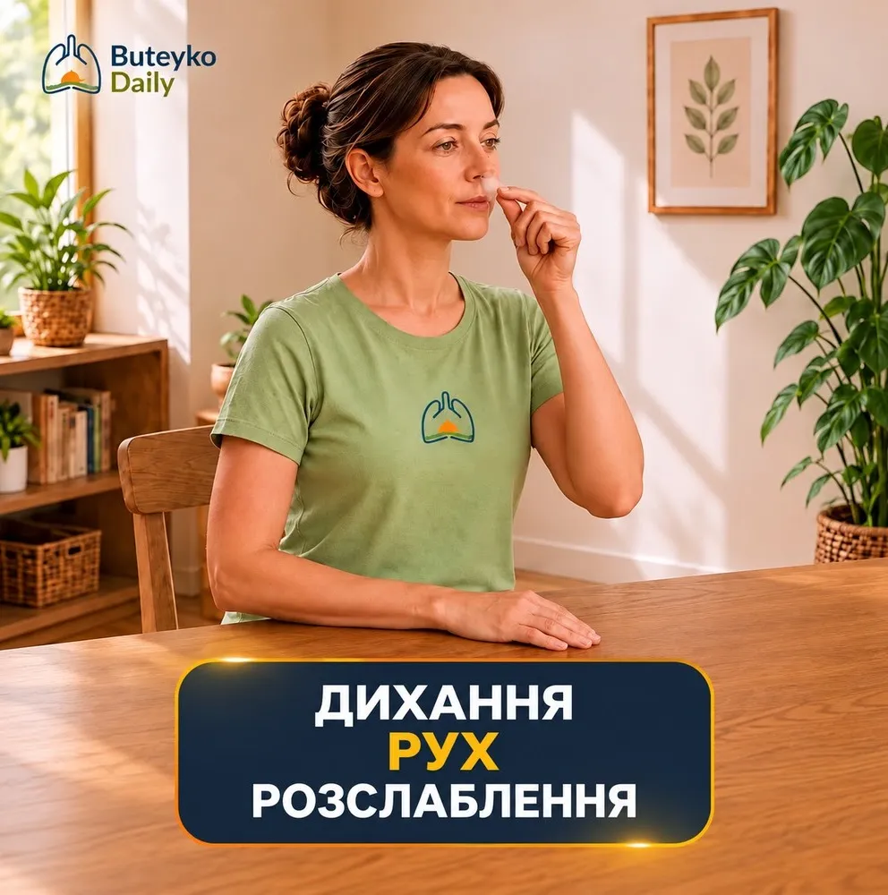
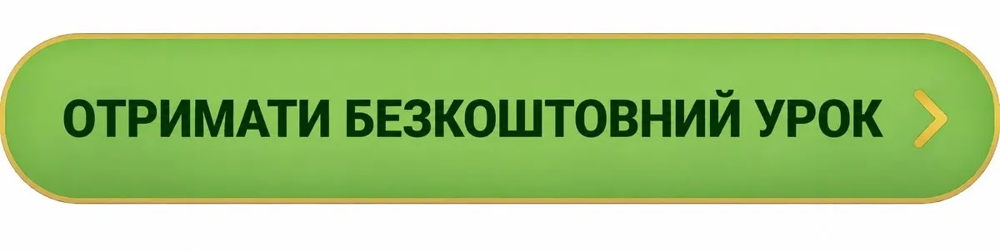
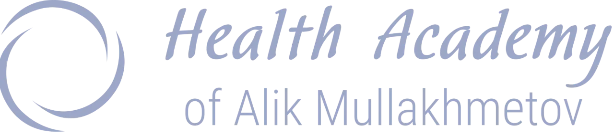
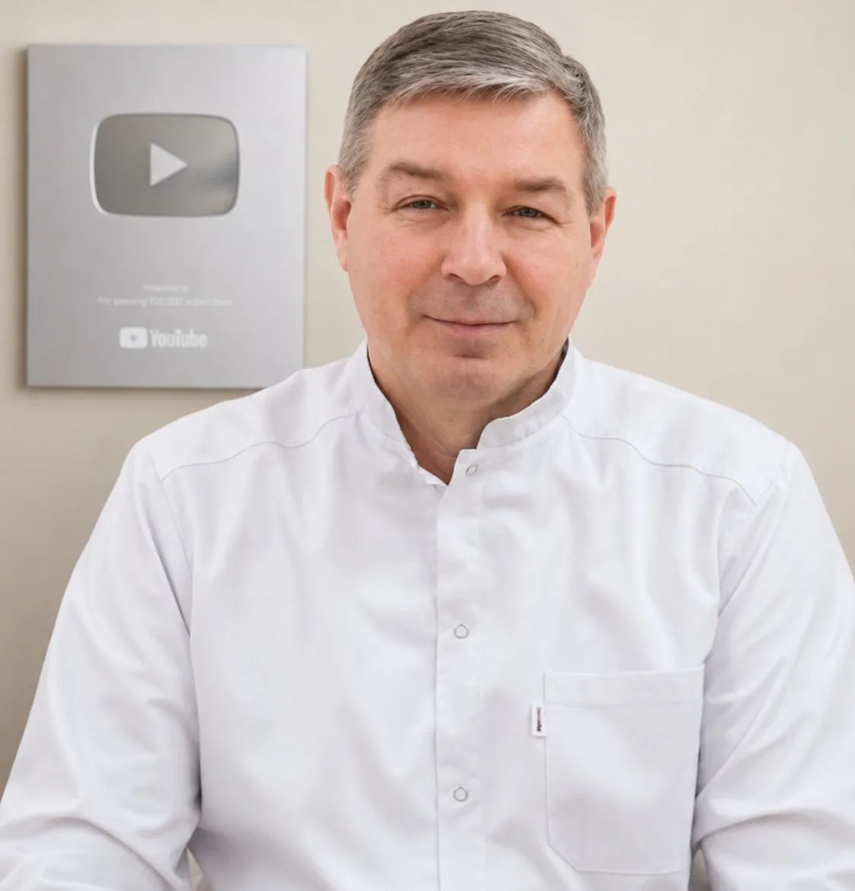
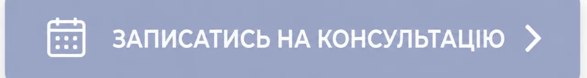
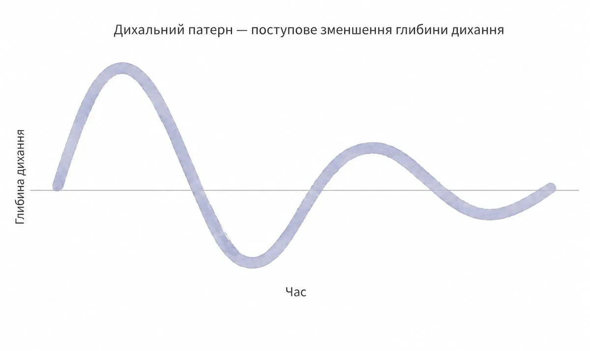

Безкоштовний урок методу Бутейка
Ваш урок за методом Бутейка
Почніть із безкоштовного уроку методу Бутейка. Практичне завдання для початківців — у Telegram



Метод Бутейка — навчання оздоровчого дихання

Дихальні практики, індивідуальне навчання
та підготовка методистів ВЛГД
Я — Алік Муллахметов, методист-ревізор ВЛГД за методом Бутейка, викладач оздоровчого дихання та фахівець із понад 30-річним досвідом практики й викладання методу Бутейка.
Для консультації та підтримки зв’яжіться зі мною зручним для вас способом:
Telegram: @alikmullahmetov, Viber / WhatsApp: +38 099 717 3275, Email: noastma@gmail.com
Буду радий відповісти на ваші запитання та допомогти визначити оптимальний формат консультації або навчання.

Відскануйте QR-код — він також веде в Telegram до безкоштовної серії уроків для початківців
Що таке метод Бутейка?
Метод Бутейка — це оздоровча система нормалізації дихання, спрямована на зменшення надлишкової вентиляції легень та формування фізіологічного стереотипу дихання.
Це не просто затримки дихання. Метод включає різні рівні дихальної практики, роботу з розслабленням, зменшенням вентиляції та адаптацією дихання до повсякденного життя.

Як я можу допомогти
- Перенавчання дихання для зменшення тривожності та втоми
- Відновлювальні дихальні практики після лікування
- Техніки зниження стресу для підтримки емоційного благополуччя
- Відновлення зв’язку між тілом і свідомістю під час безпечних занять під супроводом
Підтримка оздоровлення в комфорті вашого дому
Усі заняття проводяться онлайн через Zoom — у комфортній та безпечній домашній обстановці. Фізичне навантаження не є обов’язковим, а кожне заняття адаптується до вашого стану.
Навчання МЕТОДУ БУТЕЙКА
Індивідуальне навчання МЕТОДУ БУТЕЙКА
Персональна робота з диханням, розслабленням і формуванням правильного дихального стереотипу.
Програма підбирається індивідуально.
ДЕТАЛЬНІШЕ ПРО ІНД. НАВЧАННЯ
Навчання методистів ВЛГД БУТЕЙКА
Підготовка спеціалістів з методу Бутейка: теорія, практика, робота з учнями та професійний супровід.
ДЕТАЛЬНІШЕ ПРО НАВЧАННЯ МЕТОДИСТІВ
ДЕТАЛЬНІШЕ ПРО НАВЧАННЯ МЕТОДИСТІВ

Однією з ключових проблем на клітинному рівні є недостатнє забезпечення тканин киснем. А порушення кисневого забезпечення значною мірою пов’язане з особливостями дихання.
На фото — видатний український учений Костянтин Бутейко (1923 - 2003)
Існує парадокс дихання, про який знають далеко не всі: якщо людина дихає надмірно глибоко і вентилює легені більше, ніж потрібно організму, це не обов’язково покращує доставку кисню до тканин.
Один із фізіологічних механізмів, пов’язаних із віддачею кисню гемоглобіном тканинам, описує ефект Бора.
Якщо ви хочете детальніше дізнатися про механізми дії методу Бутейка, його наукові основи, історію розвитку та застосування у світі, натисніть кнопку нижче.
МЕТОД БУТЕЙКА. НАУКА. РОЗВИТОК
МЕТОД БУТЕЙКА. НАУКА. РОЗВИТОК
Кнопка веде на окрему сторінку, де детально розглядаються метод Бутейка, його наукові основи, фізіологічні механізми, історія розвитку та застосування у світі.
Email: noastma@gmail.com
© 2026 Алік Муллахметов Метод Бутейка